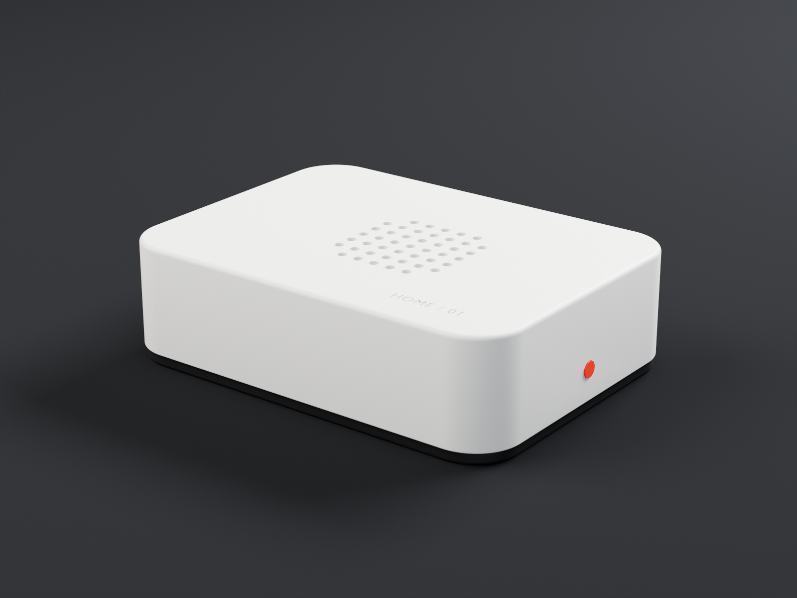
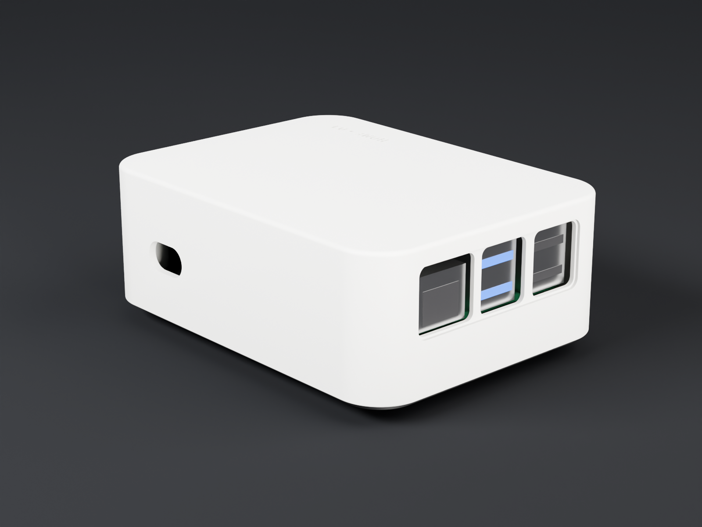
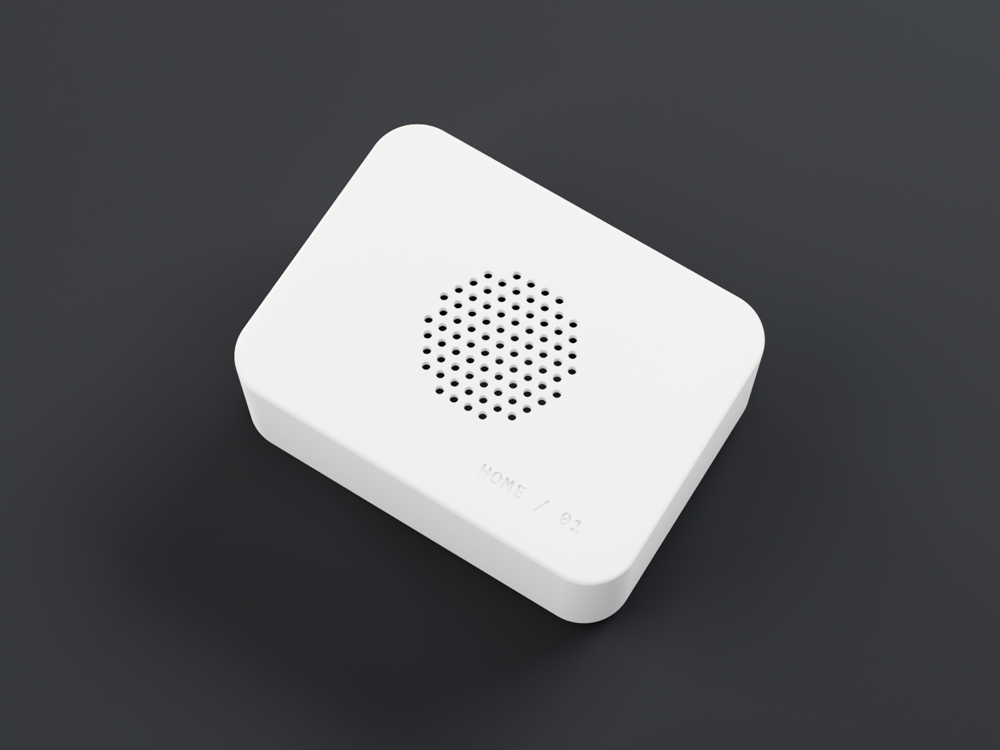
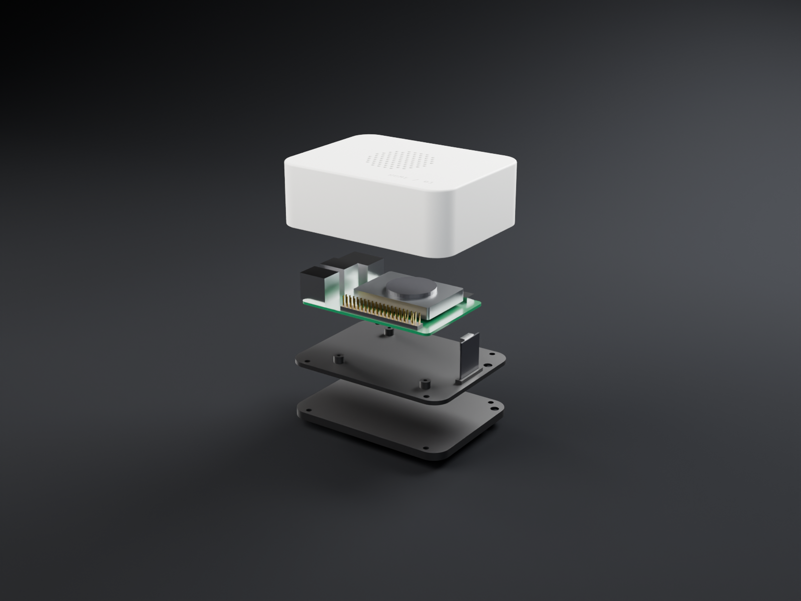

The always-on box that runs Home Assistant. Everything else in the house reports to it, and it puts all of it on your iPhone. A Raspberry Pi 5 inside a three-part printed enclosure: white shell, black base, one red light.




The hub sets the look for the rest of the family, so the laundry pods, air station and timer will all read as one set.
| Part | Why | Qty | Approx. |
|---|---|---|---|
| Raspberry Pi 5, 4 GB | Runs Home Assistant. 4 GB is plenty. | 1 | $60–85 |
| Official Raspberry Pi 27 W USB-C power supply | The Pi 5 is fussy about power; use the official one. | 1 | $12 |
| Official Raspberry Pi 5 Active Cooler | Keeps it quiet and cool in a closed case. | 1 | $5 |
| High-endurance microSD, 32–64 GB | SanDisk High Endurance or Samsung PRO Endurance. Survives constant writes. | 1 | $12 |
| Short Ethernet cable | Hub to router. More reliable than Wi-Fi. | 1 | $5 |
| M3 brass heat-set inserts (kit) | Pressed into the shell with your soldering iron. | 4 | $8 kit |
| M3 × 8 countersunk screws | Base to shell. | 4 | in a kit |
| M2.5 × 6 screws | Pi to base standoffs. | 4 | $6 kit |
| Clear silicone bumper feet, 8 mm | Grip and quiet. | 4 | $4 |
| Total | ≈ $110–135 |
The screw and insert kits get reused for every later device. Prices are rough US prices; Pi prices have moved around a lot.